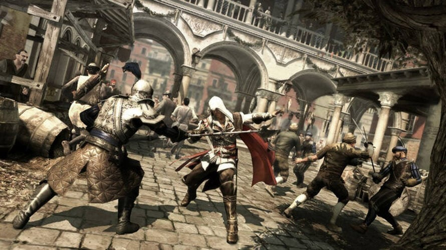

Эцио Аудиторе да Фиренце
Главный протагонист второй игры серии Assassin's Creed. Молодой дворянин, чьих родных предали и казнили, из-за чего он решил отомстить выискивая всех кто был к этому как-либо причастен.
Ранг
Мастер-Ассасин
Оружие
Пара скрытых клинков
Эпоха
1476 г.
Наша жизнь прекрасна, брат. Великолепно. Вот бы она не менялась и никогда не меняла нас.
— Фраза Эцио и Федерико
Галерея

Ватикан

Флоренция

Важнейшие события
Факты об игре
- Вторая игра серии, выпущена в 2009 году
- Действие происходит во времена эпохи Возрождения в Италии.
- Развитие механик из первой части: Паркур, боёвка, а также сюжет
- Конфликт между ассасинами и тамплиерами в Италии